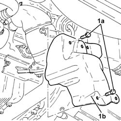
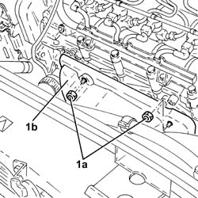

1072C44 EXHAUST MANIFOLD HEAT SHIELD ON BULKHEAD - R+R
- Path
- Procedures > 10 ENGINE UNIT > 1072 INLET AND EXHAUST MANIFOLDS > 1072C EXHAUST MANIFOLDS > 1072C44 EXHAUST MANIFOLD HEAT SHIELD ON BULKHEAD - R+R
- Kind
- repair procedure (removal / refitting; the operation number is the code)
- Applies to
- engines: 1.8 T.SPARK, 1.9 JTD 16V; all production periods
- Interactive page
- https://sloeber94.github.io/elrnDB-aGt/en/#/125001081
Applies to: engines: 1.9 JTD 16V; all production periods
 Removing
Removing
 Refitting
RefittingPosition the vehicle on the ramp
Proceed with removal
- 1016A10 sound-proofing cover - r + r
Proceed with removal
Proceed with removal
Op. 7055B54 UNDER-ENGINE GUARD - R R
1. Undo the bolts (1a) and remove the exhaust manifold heat shield (1b).
Op. 1088D24 RIGID PIPE FOR COOLANT INLET TO WATER PUMP - R + R

Applies to: engines: 1.9 JTD 16V; all production periods
1. Undo the nuts (1a) and remove the upper exhaust manifold heat shield (1b).

Applies to: engines: 1.9 JTD 16V; all production periods
Refitting
RemovingPlace the upper exhaust manifold heat shield back in its housing and fix it using the nuts.
Place the lower exhaust manifold heat shield back in its housing and fix it using the bolts.
Proceed with refitting
Op. 1088D24 RIGID PIPE FOR COOLANT INLET TO WATER PUMP - R + R.
Proceed with refitting
Op. 7055B54 UNDER-ENGINE GUARD - R R.
Refill the engine cooling system with coolant
Op. 0010T20 COOLANT CHECK DENSITY AND TOP UP IF NECESSARY.
Proceed with refitting
- 1016A10 sound-proofing cover - r + r
.
Position the vehicle on the ramp
Applies to: engines: 1.8 T.SPARK; all production periods
Removing
RefittingPosition the vehicle on the ramp.
1. Loosen the lower bolts fixing the exhaust manifold heat shield.

Applies to: engines: 1.8 T.SPARK; all production periods
1. Undo the upper bolts fixing the exhaust manifold heat shield and release it from the pins.

Applies to: engines: 1.8 T.SPARK; all production periods
1. Working underneath the vehicle, remove the exhaust manifold heat shield.

Applies to: engines: 1.8 T.SPARK; all production periods
Refitting
RemovingWorking underneath the vehicle, place the exhaust manifold heat shield back in its housing.
Tighten the upper nuts fixing the exhaust manifold heat shield.
Tighten the lower bolts fixing the exhaust manifold heat shield.
Remove the car from the ramp.
Topics linked from this page (3)
- 0010T20 COOLANT CHECK DENSITY AND TOP UP IF NECESSARY
- 1088D24 RIGID PIPE FOR COOLANT INLET TO WATER PUMP - R + R
- 7055B54 UNDER-ENGINE GUARD - R R
Topics that link to this page (34)
- T10 PASSENGER COMPARTMENT WIND NOISE, LOWER AREA / (UNDERBODY)
- 0510C20 LUBRICATION SYSTEM - CHECK DELIVERY PRESSURE
- 1008A44 REAR RIGID MOUNT - R R
- 1008B20 POWER UNIT INTERMEDIATE MOUNT FLEXIBLE BLOCK - REPLACE
- 1016C10 SINGLE CYLINDER HEAD, REMOVED - OVERHAUL
- 1020A20 CRANK CASE OIL SUMP - R + R CLEAN SEALS FOR SEALANT APPLICATION
- 1020D10 FRONT CRANK SHAFT OIL SEAL COVER - R + R AND REPLACE SEALS WITH TIMING BELT REMOVED
- 1020D15 FRONT CRANKSHAFT OIL SEAL COVER-R+R AND REPLACE SEALS FOR ENGINES WITH OIL PUMP ON CRANKSHAFT AND HEAT EXCHANGER
- 1020D38 FLYWHEEL SIDE OIL SEAL - REPLACE
- 1024B10 ENGINE FLYWHEEL - R + R FOR VERSIONS WITH MANUAL GEARBOX
- 1028H10 PISTON WITH CONNECTING ROD - R R
- 1056B90 SYSTEM CABLE BUNDLE - R + R
- 1076A46 HEAT SHIELD FOR CATALYTIC PRECONVERTER R R
- 1076B12 EXHAUST PIPE ASSEMBLY R+R EMISSION CONTROL VERSIONS
- 1080B40 CATALYTIC PRE-CONVERTER - R R
- 1080B92 LEFT UPPER LAMBDA SENSOR R R
- 1080B93 RIGHT UPPER LAMBDA SENSOR R R
- 1080B94 FRONT LAMBDA PROBE WITH CATALITIC CONVERTER R R
- 1080B98 LAMBDA SENSORS (ALL) - R.R.
- 1084A42 ENGINE OIL TEMPERATURE SENDER UNIT - R + R
- 1088D24 RIGID PIPE FOR COOLANT INLET TO WATER PUMP - R + R
- 1810A20 CLUTCH - R + R
- 1820B30 SLAVE CYLINDER - R + R
- 2110A10 MANUAL GEARBOX AND DIFFERENTIAL - R + R
- 2710A32 INTERMEDIATE DRIVE SHAFT BEARING SUPPORT - R + R WITH INTERMEDIATE DRIVE SHAFT REMOVED
- 2710A35 INTERMEDIATE DRIVE SHAFT MOUNT - R R
- 3340B56 RIGID PIPE FROM HYDRAULIC CONTROL UNIT TO RIGHT FRONT BRAKE - R.R.
- 4410c10 FRONT SUSPENSION STABILIZER BAR - R+R - CHECK WHEEL GEOMETRY SEPARATELY
- 4410D13 FRONT SUSPENSION BEAM - R R
- 4410D15 FRONT SUSPENSION BEAM COMPLETE WITH WISHBONES AND STABILISER BAR R R
- 5510C34 RPM AND TIMING SENSOR (SINGLE) - R+R
- 5510C42 KNOCK SENSOR - R+R
- 5520B10 STARTER MOTOR - R+R
- 5530A10 ALTERNATOR - R+R